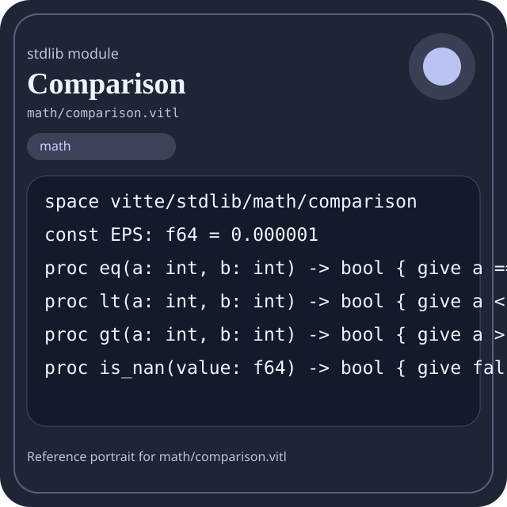

Stdlib module math/comparison.vitl
This page is a wiki-style reference for one concrete stdlib file. It explains what the file owns, where it fits in the family, and how to decide whether this is the right surface to depend on.

math/comparison.vitl.Family: math
Kind: public stdlib surface
Page style: this reference follows the same “encyclopedic card + portrait + usage contract” logic as the keyword pages, but for stdlib modules.
Summary
- Overview
- Purpose
- Taxonomy
- Implementation profile
- Top-level API inventory
- Position in family
- Declaration map
- Representative signatures
- How to use this module
- User example
- Keyword coverage
- Source shape
- Source landmarks
- Source organization
- Complete API catalog
- Integration boundaries
- Composition guidance
- Relationship table
- Neighbor modules
Overview
| Field | Value |
|---|---|
| Path | math/comparison.vitl |
| Family | math |
| Kind | public stdlib surface |
| Line count | 74 |
| Declared procedures | 47 |
| Declared forms/picks | 0 |
`math/comparison.vitl` is a public stdlib surface inside the `math` family. It should be read as one focused slice of the broader family responsibility: Arithmetic, algebra, comparison, calculus, geometry, modular arithmetic, number theory, probability, statistics, matrix, and vector helpers.
Purpose
This file should be chosen because of responsibility, not because its name “sounds close enough”. Inside the math family, it carries one focused part of the contract and keeps that responsibility separate from neighboring concerns.
- A scoring engine can compute aggregates in `math` while keeping I/O and transport elsewhere.
- A statistics or matrix chapter should explain the workflow around the computation, not just a single formula.
Taxonomy
Think of this page as a generated encyclopedia entry rather than a hand-written tutorial. The goal is to show what kind of module this is, how dense it is, and what reading strategy makes sense before depending on it.
- Large algorithm surface: this file exposes many procedures and likely acts as a domain toolkit rather than a single thin wrapper.
- Has tuning constants: part of the module behavior is controlled by named constants that document default precision, limits, or policy.
- Minimal top-level dependencies: the module reads as mostly self-contained from its opening declarations.
- Explicit export surface: the file ends with visible export declarations instead of relying only on implicit namespace discovery.
Implementation profile
This profile is inferred directly from the source text. It does not replace reading the file, but it tells you quickly whether the module is mostly declarative, loop-heavy, branch-heavy, or organized around many small exits.
| Signal | Count | What it suggests |
|---|---|---|
if | 33 | Branching density and local decision-making. |
while | 11 | Loop-heavy or iterative implementation style. |
for | 0 | Collection-style traversal at source level. |
match | 0 | Variant-driven branching or grammar-style decoding. |
let | 18 | Local state and intermediate value density. |
give | 75 | Number of explicit exit points and result shaping. |
Top-level API inventory
| Surface | Items |
|---|---|
| Procedures | eq, lt, gt, is_nan, is_inf, min, max, clamp, abs, sign, between, in_range |
| Forms | none declared at top level |
| Picks | none declared at top level |
| Constants | EPS |
| Exports | * |
Imported surfaces
This file does not advertise a top-level `use` surface in its opening declarations. That often means it is either self-contained or an aggregation layer.
Position in family
This file is module 6 of 21 in the math family when ordered by path. By procedure count it ranks 14, and by line count it ranks 19. Those ranks are useful as rough signals of breadth, not as quality judgments.
Declaration map
The declaration map turns raw source into a scan-friendly catalog. It is useful when the file is large enough that a reader wants to orient by kinds of surfaces first.
| Line | Name | Kind | Role |
|---|---|---|---|
| 1 | vitte/stdlib/math/comparison | space | Declares the namespace that anchors this file in the stdlib tree. |
| 3 | EPS | const | Defines a bound or precision constant that shapes runtime behavior. |
| 5 | eq | proc | Represents one top-level surface in the file contract and should be read as part of the module boundary. |
| 6 | lt | proc | Represents one top-level surface in the file contract and should be read as part of the module boundary. |
| 7 | gt | proc | Represents one top-level surface in the file contract and should be read as part of the module boundary. |
| 8 | is_nan | proc | Represents one top-level surface in the file contract and should be read as part of the module boundary. |
| 9 | is_inf | proc | Represents one top-level surface in the file contract and should be read as part of the module boundary. |
| 10 | min | proc | Represents one top-level surface in the file contract and should be read as part of the module boundary. |
| 11 | max | proc | Represents one top-level surface in the file contract and should be read as part of the module boundary. |
| 12 | clamp | proc | Represents one top-level surface in the file contract and should be read as part of the module boundary. |
| 13 | abs | proc | Represents one top-level surface in the file contract and should be read as part of the module boundary. |
| 14 | sign | proc | Implements a security-sensitive transformation in the crypto boundary. |
| 15 | between | proc | Represents one top-level surface in the file contract and should be read as part of the module boundary. |
| 16 | in_range | proc | Represents one top-level surface in the file contract and should be read as part of the module boundary. |
| 17 | compare | proc | Represents one top-level surface in the file contract and should be read as part of the module boundary. |
| 18 | cmp_reverse | proc | Represents one top-level surface in the file contract and should be read as part of the module boundary. |
| 19 | min_f64 | proc | Represents one top-level surface in the file contract and should be read as part of the module boundary. |
| 20 | max_f64 | proc | Represents one top-level surface in the file contract and should be read as part of the module boundary. |
| 21 | clamp_f64 | proc | Represents one top-level surface in the file contract and should be read as part of the module boundary. |
| 22 | abs_f64 | proc | Represents one top-level surface in the file contract and should be read as part of the module boundary. |
| 23 | sign_f64 | proc | Implements a security-sensitive transformation in the crypto boundary. |
| 24 | compare_f64 | proc | Represents one top-level surface in the file contract and should be read as part of the module boundary. |
| 25 | approx_eq | proc | Represents one top-level surface in the file contract and should be read as part of the module boundary. |
| 29 | approx_lt | proc | Represents one top-level surface in the file contract and should be read as part of the module boundary. |
| 30 | approx_gt | proc | Represents one top-level surface in the file contract and should be read as part of the module boundary. |
| 31 | approx_between | proc | Represents one top-level surface in the file contract and should be read as part of the module boundary. |
| 32 | approx_in_range | proc | Represents one top-level surface in the file contract and should be read as part of the module boundary. |
| 34 | is_sorted | proc | Represents one top-level surface in the file contract and should be read as part of the module boundary. |
| 35 | is_sorted_desc | proc | Represents one top-level surface in the file contract and should be read as part of the module boundary. |
| 36 | is_sorted_f64 | proc | Represents one top-level surface in the file contract and should be read as part of the module boundary. |
| 37 | is_sorted_desc_f64 | proc | Represents one top-level surface in the file contract and should be read as part of the module boundary. |
| 39 | argmin | proc | Represents one top-level surface in the file contract and should be read as part of the module boundary. |
| 40 | argmax | proc | Represents one top-level surface in the file contract and should be read as part of the module boundary. |
| 41 | argmin_f64 | proc | Represents one top-level surface in the file contract and should be read as part of the module boundary. |
| 42 | argmax_f64 | proc | Represents one top-level surface in the file contract and should be read as part of the module boundary. |
| 44 | all | proc | Represents one top-level surface in the file contract and should be read as part of the module boundary. |
| 45 | any | proc | Represents one top-level surface in the file contract and should be read as part of the module boundary. |
| 46 | none | proc | Represents one top-level surface in the file contract and should be read as part of the module boundary. |
| 47 | count_true | proc | Represents one top-level surface in the file contract and should be read as part of the module boundary. |
| 48 | min_fast | proc | Represents one top-level surface in the file contract and should be read as part of the module boundary. |
| 49 | max_fast | proc | Represents one top-level surface in the file contract and should be read as part of the module boundary. |
| 50 | compare_generic | proc | Represents one top-level surface in the file contract and should be read as part of the module boundary. |
| 51 | min_generic | proc | Represents one top-level surface in the file contract and should be read as part of the module boundary. |
| 52 | max_generic | proc | Represents one top-level surface in the file contract and should be read as part of the module boundary. |
| 53 | clamp_generic | proc | Represents one top-level surface in the file contract and should be read as part of the module boundary. |
| 54 | is_sorted_generic | proc | Represents one top-level surface in the file contract and should be read as part of the module boundary. |
| 56 | comparison_version | proc | Represents one top-level surface in the file contract and should be read as part of the module boundary. |
| 57 | comparison_ready | proc | Represents one top-level surface in the file contract and should be read as part of the module boundary. |
| 58 | comparison_selftest | proc | Represents one top-level surface in the file contract and should be read as part of the module boundary. |
The table is exhaustive for top-level declarations of the selected kinds. This file declares 49 matching surfaces.
Representative signatures
These signatures are shown in source order so the page keeps the feel of a reference manual, not just a keyword cloud.
const EPS: f64 = 0.000001(line 3)proc eq(a: int, b: int) -> bool { give a == b }(line 5)proc lt(a: int, b: int) -> bool { give a < b }(line 6)proc gt(a: int, b: int) -> bool { give a > b }(line 7)proc is_nan(value: f64) -> bool { give false }(line 8)proc is_inf(value: f64) -> bool { give value > 1000000000000000000.0 or value < 0.0 - 1000000000000000000.0 }(line 9)proc min(a: int, b: int) -> int { if a < b { give a } give b }(line 10)proc max(a: int, b: int) -> int { if a > b { give a } give b }(line 11)proc clamp(value: int, low: int, high: int) -> int { if value < low { give low } if value > high { give high } give value }(line 12)proc abs(value: int) -> int { if value < 0 { give 0 - value } give value }(line 13)proc sign(value: int) -> int { if value > 0 { give 1 } if value < 0 { give -1 } give 0 }(line 14)proc between(value: int, low: int, high: int) -> bool { give value > low and value < high }(line 15)proc in_range(value: int, low: int, high: int) -> bool { give value >= low and value <= high }(line 16)proc compare(a: int, b: int) -> int { if a < b { give -1 } if a > b { give 1 } give 0 }(line 17)proc cmp_reverse(a: int, b: int) -> int { give 0 - compare(a, b) }(line 18)proc min_f64(a: f64, b: f64) -> f64 { if a < b { give a } give b }(line 19)proc max_f64(a: f64, b: f64) -> f64 { if a > b { give a } give b }(line 20)proc clamp_f64(value: f64, low: f64, high: f64) -> f64 { if value < low { give low } if value > high { give high } give value }(line 21)
The list is intentionally capped here; the source file declares 48 matching signatures in total.
How to use this module
Start by reading the file as an ownership boundary. Ask three questions: what enters this module, what stable types or procedures it exports, and what adjacent module should stay outside of it.
- Read
spaceand top-level imports first so the ownership boundary ofmath/comparison.vitlis explicit. - Scan constants before procedures; they often encode precision, limits, or policy assumptions that explain later behavior.
- Traverse procedures in source order; the early helpers usually explain the naming and numeric conventions used later.
- Only after that compare neighbor modules, because the right boundary choice matters more than memorizing one helper name.
User example
This example is generated from the actual stdlib module surface. Its job is not to be the smallest snippet possible; its job is to show a realistic consumer-shaped file that exercises the module and mirrors the language keywords the module itself relies on.
space demo/math_comparison
const SAMPLE_LABEL: string = "demo"
proc run_example() -> string {
let result = eq(1, 1)
let failed: bool = false
let stable: bool = ready and true
let fallback: bool = ready or false
let idx: int = 0
while idx < 1 {
set idx = idx + 1
}
if not ready {
give "not-ready"
}
give "ok"
}
export run_exampleKeyword coverage
This table makes the “all keywords of the module” requirement auditable. It compares the detected Vitte keywords in the source file with the generated consumer example above.
| Keyword | Present in module source | Used in generated user example |
|---|---|---|
space | yes | yes |
const | yes | yes |
proc | yes | yes |
let | yes | yes |
set | yes | yes |
if | yes | yes |
while | yes | yes |
give | yes | yes |
export | yes | yes |
true | yes | yes |
false | yes | yes |
and | yes | yes |
or | yes | yes |
not | yes | yes |
The generated snippet exercises every detected Vitte keyword used by this module.
Source shape
space vitte/stdlib/math/comparison
const EPS: f64 = 0.000001
proc eq(a: int, b: int) -> bool { give a == b }
proc lt(a: int, b: int) -> bool { give a < b }
proc gt(a: int, b: int) -> bool { give a > b }
proc is_nan(value: f64) -> bool { give false }
proc is_inf(value: f64) -> bool { give value > 1000000000000000000.0 or value < 0.0 - 1000000000000000000.0 }
proc min(a: int, b: int) -> int { if a < b { give a } give b }
proc max(a: int, b: int) -> int { if a > b { give a } give b }
proc clamp(value: int, low: int, high: int) -> int { if value < low { give low } if value > high { give high } give value }The excerpt is not meant to replace the file. It exists to make the module recognizable at first glance, the same way a Wikipedia infobox helps the reader orient before reading the whole article.
Source landmarks
Large files are easier to retain when they have visible landmarks. When the source contains explicit section banners, they are surfaced here; otherwise the first major declarations are used as anchors.
- Line 1:
space vitte/stdlib/math/comparison - Line 3:
const EPS: f64 = 0.000001 - Line 5:
proc eq(a: int, b: int) -> bool { give a == b } - Line 6:
proc lt(a: int, b: int) -> bool { give a < b } - Line 7:
proc gt(a: int, b: int) -> bool { give a > b } - Line 8:
proc is_nan(value: f64) -> bool { give false } - Line 9:
proc is_inf(value: f64) -> bool { give value > 1000000000000000000.0 or value < 0.0 - 1000000000000000000.0 } - Line 10:
proc min(a: int, b: int) -> int { if a < b { give a } give b }
Source organization
When a file carries its own internal chaptering, those chapters usually reveal the intended reading order better than a flat symbol list. This section reconstructs that organization from the source itself.
File surfaces
Top-level items: 50. Procedures: 47. Data surfaces: 0. Constants: 1.
First visible names: vitte/stdlib/math/comparison, EPS, eq, lt, gt, is_nan, is_inf, min, max, clamp
Complete API catalog
This catalog is the exhaustive file-level index for the module. It is intentionally closer to a generated encyclopedia appendix than to a tutorial summary.
Constants
| Line | Name | Signature | Role |
|---|---|---|---|
| 3 | EPS | const EPS: f64 = 0.000001 | Defines a bound or precision constant that shapes runtime behavior. |
Procedures
| Line | Name | Signature | Role |
|---|---|---|---|
| 5 | eq | proc eq(a: int, b: int) -> bool { give a == b } | Represents one top-level surface in the file contract and should be read as part of the module boundary. |
| 6 | lt | proc lt(a: int, b: int) -> bool { give a < b } | Represents one top-level surface in the file contract and should be read as part of the module boundary. |
| 7 | gt | proc gt(a: int, b: int) -> bool { give a > b } | Represents one top-level surface in the file contract and should be read as part of the module boundary. |
| 8 | is_nan | proc is_nan(value: f64) -> bool { give false } | Represents one top-level surface in the file contract and should be read as part of the module boundary. |
| 9 | is_inf | proc is_inf(value: f64) -> bool { give value > 1000000000000000000.0 or value < 0.0 - 1000000000000000000.0 } | Represents one top-level surface in the file contract and should be read as part of the module boundary. |
| 10 | min | proc min(a: int, b: int) -> int { if a < b { give a } give b } | Represents one top-level surface in the file contract and should be read as part of the module boundary. |
| 11 | max | proc max(a: int, b: int) -> int { if a > b { give a } give b } | Represents one top-level surface in the file contract and should be read as part of the module boundary. |
| 12 | clamp | proc clamp(value: int, low: int, high: int) -> int { if value < low { give low } if value > high { give high } give value } | Represents one top-level surface in the file contract and should be read as part of the module boundary. |
| 13 | abs | proc abs(value: int) -> int { if value < 0 { give 0 - value } give value } | Represents one top-level surface in the file contract and should be read as part of the module boundary. |
| 14 | sign | proc sign(value: int) -> int { if value > 0 { give 1 } if value < 0 { give -1 } give 0 } | Implements a security-sensitive transformation in the crypto boundary. |
| 15 | between | proc between(value: int, low: int, high: int) -> bool { give value > low and value < high } | Represents one top-level surface in the file contract and should be read as part of the module boundary. |
| 16 | in_range | proc in_range(value: int, low: int, high: int) -> bool { give value >= low and value <= high } | Represents one top-level surface in the file contract and should be read as part of the module boundary. |
| 17 | compare | proc compare(a: int, b: int) -> int { if a < b { give -1 } if a > b { give 1 } give 0 } | Represents one top-level surface in the file contract and should be read as part of the module boundary. |
| 18 | cmp_reverse | proc cmp_reverse(a: int, b: int) -> int { give 0 - compare(a, b) } | Represents one top-level surface in the file contract and should be read as part of the module boundary. |
| 19 | min_f64 | proc min_f64(a: f64, b: f64) -> f64 { if a < b { give a } give b } | Represents one top-level surface in the file contract and should be read as part of the module boundary. |
| 20 | max_f64 | proc max_f64(a: f64, b: f64) -> f64 { if a > b { give a } give b } | Represents one top-level surface in the file contract and should be read as part of the module boundary. |
| 21 | clamp_f64 | proc clamp_f64(value: f64, low: f64, high: f64) -> f64 { if value < low { give low } if value > high { give high } give value } | Represents one top-level surface in the file contract and should be read as part of the module boundary. |
| 22 | abs_f64 | proc abs_f64(value: f64) -> f64 { if value < 0.0 { give 0.0 - value } give value } | Represents one top-level surface in the file contract and should be read as part of the module boundary. |
| 23 | sign_f64 | proc sign_f64(value: f64) -> f64 { if value > 0.0 { give 1.0 } if value < 0.0 { give -1.0 } give 0.0 } | Implements a security-sensitive transformation in the crypto boundary. |
| 24 | compare_f64 | proc compare_f64(a: f64, b: f64) -> int { if a < b { give -1 } if a > b { give 1 } give 0 } | Represents one top-level surface in the file contract and should be read as part of the module boundary. |
| 25 | approx_eq | proc approx_eq(a: f64, b: f64) -> bool { | Represents one top-level surface in the file contract and should be read as part of the module boundary. |
| 29 | approx_lt | proc approx_lt(a: f64, b: f64) -> bool { give a < b and not approx_eq(a, b) } | Represents one top-level surface in the file contract and should be read as part of the module boundary. |
| 30 | approx_gt | proc approx_gt(a: f64, b: f64) -> bool { give a > b and not approx_eq(a, b) } | Represents one top-level surface in the file contract and should be read as part of the module boundary. |
| 31 | approx_between | proc approx_between(value: f64, low: f64, high: f64) -> bool { give value > low - EPS and value < high + EPS } | Represents one top-level surface in the file contract and should be read as part of the module boundary. |
| 32 | approx_in_range | proc approx_in_range(value: f64, low: f64, high: f64) -> bool { give value >= low - EPS and value <= high + EPS } | Represents one top-level surface in the file contract and should be read as part of the module boundary. |
| 34 | is_sorted | proc is_sorted(values: [int]) -> bool { let i: int = 1 while i < values.len { if values[i] < values[i - 1] { give false } set i = i + 1 } give true } | Represents one top-level surface in the file contract and should be read as part of the module boundary. |
| 35 | is_sorted_desc | proc is_sorted_desc(values: [int]) -> bool { let i: int = 1 while i < values.len { if values[i] > values[i - 1] { give false } set i = i + 1 } give true } | Represents one top-level surface in the file contract and should be read as part of the module boundary. |
| 36 | is_sorted_f64 | proc is_sorted_f64(values: [f64]) -> bool { let i: int = 1 while i < values.len { if values[i] < values[i - 1] { give false } set i = i + 1 } give true } | Represents one top-level surface in the file contract and should be read as part of the module boundary. |
| 37 | is_sorted_desc_f64 | proc is_sorted_desc_f64(values: [f64]) -> bool { let i: int = 1 while i < values.len { if values[i] > values[i - 1] { give false } set i = i + 1 } give true } | Represents one top-level surface in the file contract and should be read as part of the module boundary. |
| 39 | argmin | proc argmin(values: [int]) -> int { if values.len == 0 { give -1 } let best: int = 0 let i: int = 1 while i < values.len { if values[i] < values[best] { set best = i } set i = i + 1 } give best } | Represents one top-level surface in the file contract and should be read as part of the module boundary. |
| 40 | argmax | proc argmax(values: [int]) -> int { if values.len == 0 { give -1 } let best: int = 0 let i: int = 1 while i < values.len { if values[i] > values[best] { set best = i } set i = i + 1 } give best } | Represents one top-level surface in the file contract and should be read as part of the module boundary. |
| 41 | argmin_f64 | proc argmin_f64(values: [f64]) -> int { if values.len == 0 { give -1 } let best: int = 0 let i: int = 1 while i < values.len { if values[i] < values[best] { set best = i } set i = i + 1 } give best } | Represents one top-level surface in the file contract and should be read as part of the module boundary. |
| 42 | argmax_f64 | proc argmax_f64(values: [f64]) -> int { if values.len == 0 { give -1 } let best: int = 0 let i: int = 1 while i < values.len { if values[i] > values[best] { set best = i } set i = i + 1 } give best } | Represents one top-level surface in the file contract and should be read as part of the module boundary. |
| 44 | all | proc all(values: [bool]) -> bool { let i: int = 0 while i < values.len { if not values[i] { give false } set i = i + 1 } give values.len > 0 } | Represents one top-level surface in the file contract and should be read as part of the module boundary. |
| 45 | any | proc any(values: [bool]) -> bool { let i: int = 0 while i < values.len { if values[i] { give true } set i = i + 1 } give false } | Represents one top-level surface in the file contract and should be read as part of the module boundary. |
| 46 | none | proc none(values: [bool]) -> bool { give not any(values) } | Represents one top-level surface in the file contract and should be read as part of the module boundary. |
| 47 | count_true | proc count_true(values: [bool]) -> int { let total: int = 0 let i: int = 0 while i < values.len { if values[i] { set total = total + 1 } set i = i + 1 } give total } | Represents one top-level surface in the file contract and should be read as part of the module boundary. |
| 48 | min_fast | proc min_fast(a: int, b: int) -> int { give min(a, b) } | Represents one top-level surface in the file contract and should be read as part of the module boundary. |
| 49 | max_fast | proc max_fast(a: int, b: int) -> int { give max(a, b) } | Represents one top-level surface in the file contract and should be read as part of the module boundary. |
| 50 | compare_generic | proc compare_generic(a: int, b: int) -> int { give compare(a, b) } | Represents one top-level surface in the file contract and should be read as part of the module boundary. |
| 51 | min_generic | proc min_generic(a: int, b: int) -> int { give min(a, b) } | Represents one top-level surface in the file contract and should be read as part of the module boundary. |
| 52 | max_generic | proc max_generic(a: int, b: int) -> int { give max(a, b) } | Represents one top-level surface in the file contract and should be read as part of the module boundary. |
| 53 | clamp_generic | proc clamp_generic(value: int, low: int, high: int) -> int { give clamp(value, low, high) } | Represents one top-level surface in the file contract and should be read as part of the module boundary. |
| 54 | is_sorted_generic | proc is_sorted_generic(values: [int]) -> bool { give is_sorted(values) } | Represents one top-level surface in the file contract and should be read as part of the module boundary. |
| 56 | comparison_version | proc comparison_version() -> string { give "max-1" } | Represents one top-level surface in the file contract and should be read as part of the module boundary. |
| 57 | comparison_ready | proc comparison_ready() -> bool { give true } | Represents one top-level surface in the file contract and should be read as part of the module boundary. |
| 58 | comparison_selftest | proc comparison_selftest() -> bool { | Represents one top-level surface in the file contract and should be read as part of the module boundary. |
Exports
| Line | Name | Signature | Role |
|---|---|---|---|
| 74 | * | export * | Re-exports surfaces that the module wants to expose as part of its public boundary. |
Integration boundaries
Within math, this file should remain focused. If a future helper changes the host boundary, scheduling boundary, or data-shape boundary, it probably belongs in a neighbor module instead of being added here by convenience.
- Family responsibility: Arithmetic, algebra, comparison, calculus, geometry, modular arithmetic, number theory, probability, statistics, matrix, and vector helpers.
- Family architecture role: Use `math` when the transformation itself is the feature. This family exists so algorithmic intent stays visible and testable.
Composition guidance
Choose this module when
- Choose
math/comparison.vitlwhen the main question is owned by this module rather than by transport, storage, orchestration, or user-interface code. - A scoring engine can compute aggregates in `math` while keeping I/O and transport elsewhere.
- A statistics or matrix chapter should explain the workflow around the computation, not just a single formula.
Pause before extending it when
- Avoid extending this file when the new helper mostly changes the boundary to host I/O, runtime coordination, or foreign integration instead of staying inside
math. - Check nearby modules such as
math/algebra.vitl,math/arithmetic.vitl,math/arrays.vitlbefore adding convenience wrappers here.
Relationship table
This table keeps the page closer to a real encyclopedia entry: a module is easier to understand when compared with its nearest alternatives in the same family.
| Neighbor | Procedures | Data surfaces | Why compare it |
|---|---|---|---|
math/algebra.vitl | 14 | 0 | Shares the same family boundary but carries a distinct slice of responsibility. |
math/arithmetic.vitl | 72 | 2 | Shares the same family boundary but carries a distinct slice of responsibility. |
math/arrays.vitl | 83 | 2 | Shares the same family boundary but carries a distinct slice of responsibility. |
math/calculus.vitl | 56 | 3 | Shares the same family boundary but carries a distinct slice of responsibility. |
math/complex.vitl | 49 | 0 | Shares the same family boundary but carries a distinct slice of responsibility. |
math/geometry.vitl | 72 | 0 | Shares the same family boundary but carries a distinct slice of responsibility. |
math/logic.vitl | 20 | 0 | Shares the same family boundary but carries a distinct slice of responsibility. |
math/matrix.vitl | 53 | 0 | Shares the same family boundary but carries a distinct slice of responsibility. |